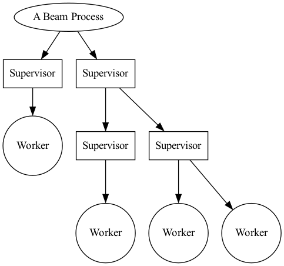
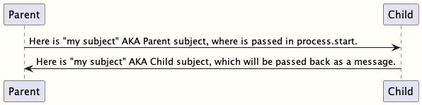

Gleam OTP Design Principles User's Guide
This document is a work in progress and will be updated as time permits.
Overview
The OTP design principles define how to structure Gleam code in terms of processes and modules.
Supervisor Tree
A fundamental idea of most BEAM based language is the ability to supervise a process, and be notified of its failure. This supervisory idea has roots in the erlang history and has become a well accepted method to deal with process failure.
There can be a heirachy of workers and supervisors, otherwise known as "the supervision tree".
Workers are processes that perform computations, that is they have work to do.
- A supervisor can monitor the behaviour of workers.
- A supervisor can restart aworker if something goes wrong.
- A worker can notify a superivsor if something goes wrong.
- A supervisor has different modes of dealing with worker failure.
Designing software that uses the supervision tree pattern can allow a developer to create highly resiliant software.
In the following figure, square boxes represents supervisors and circles represent workers:

Supervisors can supervise workers, and supervisors can supervise supervisors.
Simple Processes example.
Before understanding the worker/supervisor implementation, We should create a basic example of starting a 'process' and sending messages to it.
A process is not a OS level process, it is a 'thread' running within the single "beam" virtual machine. It doesn't come with the memory use and synchronization requirements that traditional operating sytem thread or processes require.
Starting a process.
A process can be started with "process.start", see the following:
import gleam/erlang/process ... let assert pid = process.start(running: start_process, linked: False)
The first parameter is the function to run within the newly spawned process. This function has no arguements and returns no finished value, I like to use start_process to set the initial state, then enter the main loop which will continue to deal with messages sent to this process.
The second parameter "linked: true", creates a "link" between two processes. If either of the proccesses participating ink a link terminates, it will send an exit message to the other participant. The exit message will contain the reason of the terminated participant.
In this case, there is no need to know if a process has terminated as no action will be taken. This is not a supervisor.
Sending messages
Gleam’s process requires type safety for both processes and messages. When sending messages between processes, the first step is to have a 'subject' which references the spawned process.
You can do this with process.new_subject, that makes a subject based in the current process. Subject is an opaque type. An opaque type is a type where the constructors of that type arent exposed to other modules that import the type. You must use the "new_subject" call to create one.
If the "new_subject" call is made in a different process, it would have different contents.
let my_subject = process.new_subject()
This reference is used to message the process that created the subject. When a new process is started, unless a subject is created in this new process context and the subject messaged back to the parent process, the parent process will be unable to message the child.
As messages are strictly typed, you must create a Type that can encapsulate the needs of the data being sent to the process, including subject data being sent between them.
The example below shows a types used in both Sending and Receiving from this newly spawned process.
ChannelResponse type (from the new process)
pub type ChannelResponse { ChildSubject(Subject(ChannelRequest)) Allocated(id: Int) // additional message that the process can respond with. None // additional message that the process can respond with. }
and the ChannelRequest type (to the new process)
pub type ChannelRequest { Allocate Show Free(ChannelResponse) }
As stated earlier, to be able to send to the process, a subject in the new process context will need to be sent to the parent process.
This message will need to be captured and used when making the request.

The "Child" subject can be passed to other processes or used by the parent. However the typed messages to the Child must remain consistent.
Messages can be set to a target subject with the 'process.send'. The example allocate below is a simple message of type "ChannelRequest" with no parameters. More complex data can be passed with more complex Types if required.
process.send(target, Allocate)
Listed below is a simple example of a process sending a message to another process.
import gleam/io import gleam/int import gleam/list import gleam/erlang/process.{Subject} import gleam/result import gleam/function import gleam/iterator.{iterate, take, to_list} pub type ChannelResponse { Allocated(id: Int) None ChildSubject(Subject(ChannelRequest)) } pub type ChannelRequest { Allocate Show Free(ChannelResponse) } pub fn alloc(target, mine ) { process.send(target, Allocate) let assert Ok(allocation) = process.receive(mine, within: 1000) allocation } pub fn free(target, mine, channel) { process.send(target, Free(channel)) } pub fn show(target, mine) { process.send(target, Show) } // generate a list of 100 channels for init. pub fn generate_channel_list() { iterate(1, fn(n) { 1+n }) |> take(100) |> to_list } pub fn main() { io.println("Hello from non_gen_server!") // similar to a channel between the process to start let my_subject = process.new_subject() let thing = fn() { init(my_subject)} // why do i block here ? let assert pid = process.start(running: thing, linked: True) // the channel from the child let assert ChildSubject(child_subject)= process.receive(my_subject, within: 100_000_000) |> result.unwrap(None) // show the default channels. show(child_subject, my_subject) // get three channels. let channel1 = alloc(child_subject, my_subject) let channel2 = alloc(child_subject, my_subject) let channel3 = alloc(child_subject, my_subject) // show the free channel list: show(child_subject, my_subject) free(child_subject, my_subject, channel1) free(child_subject, my_subject, channel2) free(child_subject, my_subject, channel3) show(child_subject, my_subject) Ok(process.sleep_forever()) } pub fn init(parent_subject: Subject(ChannelResponse)) { // send our channel back to the paren let my_subject = process.new_subject() process.send(parent_subject, ChildSubject(my_subject)) // start the main process loop loop(my_subject, parent_subject, generate_channel_list()) } pub fn loop(my_subject: Subject(ChannelRequest), parent_subject: Subject(ChannelResponse), channels: List(Int)) { // add a selector to listen from parent process. let sel = process.new_selector() |> process.selecting(for: my_subject, mapping: function.identity ) // block forever on parent process let msg = process.select_forever(sel) let new_channels = case msg { Allocate() -> { // choose the first value, return rest for new state let [next_available, .. rest ] = channels process.send(parent_subject, Allocated(next_available)) io.debug("allocating channel " <> int.to_string(next_available) ) rest } Free(id) -> { // io.debug("freeing channel " <> int.to_string(id) ) let assert Allocated(channel) = id io.debug("Freeing channel: " <> int.to_string(channel)) list.append([channel], channels) } Show -> { io.debug("Available channels: !") io.debug(channels) channels } } loop(my_subject, parent_subject, new_channels) }
The Worker
PUT WORKER EXAMPLE HERE
The supervisor
PUT SUPERVISOR EXAMPLE HERE
Round the ring
DESCRIBE RING DEMO HERE AND ADD SOURCE.
References: gleam otp source for supervisors.
Distribution
LINK UP EXAMPLE DISTRIBUTION LIBRARY HERE
Starting up nodes.
Setup example here.